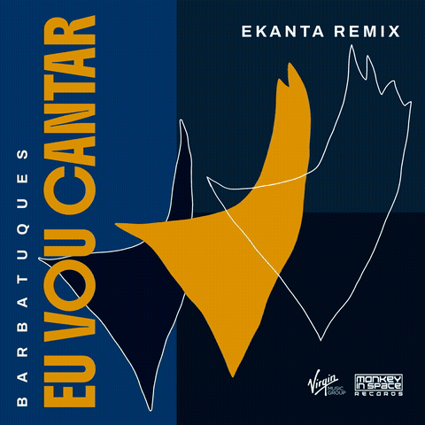
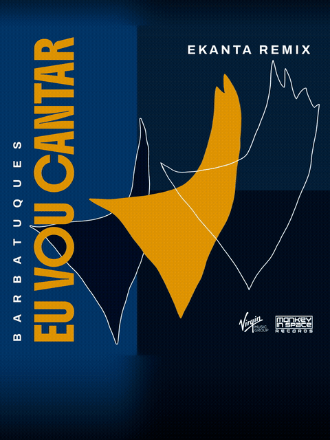
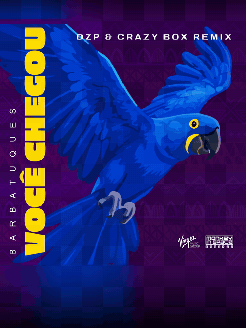

O que é Apple Music Motion Art?
Apple Music Album Motion Art
A Apple Music permite que artistas e selos substituam a capa estática do álbum por um vídeo curto em loop que aparece na página do álbum, na busca e nas playlists. É uma forma de dar vida à arte do lançamento e destacar o trabalho na plataforma.
- Formatos: 1:1 (3840×3840) e 3:4 (2048×2732)
- Codec: H.264 (45–100 Mbps) ou ProRes 422/4444
- Duração: 8–35 segundos (algumas distribuidoras exigem 15–35s)
- Requisitos: primeiro frame = capa estática, loop sem salto, mudo, Rec.709, SAR 1:1, sem selo Parental Advisory na arte
Fontes oficiais: Motion Album Artwork · Album Motion Art Delivery
O que o Apple Music Album Motion Art faz
Estúdio de motion completo
Transforma uma capa (PNG/JPG/TIFF) ou um PSD em camadas em 2 vídeos prontos para a Apple Music — com camadas, keyframes, efeitos, plugins e validação automática. Tudo roda localmente, sem After Effects, sem motion designer.
Prepare o material
Capa plana (PNG/JPG/TIFF) ou PSD em camadas. Qualquer tamanho: 2048, 3000 ou 4K. Se não for quadrada, use --fit crop ou --fit extend.
Inicialize o projeto
studio.py init capa.png work/proj --template punk-impact — cria o projeto com camadas, efeitos e movimento inicial.
Edite e faça preview
Adicione camadas, efeitos, keyframes. Veja o preview (folha de contato, GIF) e itere com o usuário.
Cheque e renderize
studio.py check valida frame 0, loop, flash e brilho. studio.py render gera os .mov (3:4 e 1:1).
Valide e entregue
validate_motion.py confirma resolução, SAR, bitrate, duração e codec. Tudo ✅ = pronto para a distribuidora.
Exemplos
Capas reais de lançamentos animadas com o projeto. Cada uma gera 2 vídeos: 1:1 (3840×3840) e 3:4 (2048×2732).
EKANTA — EU VOU CANTAR



Você Chegou


O que o projeto oferece
Entrada flexível
PNG/JPG/TIFF quadrados (2048, 3000, 4K) e PSD em camadas. Recorte automático de pessoa com IA.
Motor de composição
Camadas image/text/generator/lock/adjust, keyframes e expressões em loop fechado, blend modes.
Catálogo + plugins
8 efeitos de camada + 11 geradores. Crie efeitos novos em Python com new-effect.
Check automático
Reprova frame 0 ≠ capa, salto no loop, flash/strobe, brilho estourado.
Validador técnico
Resolução, SAR 1:1, 45–100 Mbps, duração, mudo, Rec.709, frame rate, flash, loop.
Selo explícito
Detecta e remove Parental Advisory (Apple não permite na arte de motion).
3:4 com Safe Area
Arte de ponta a ponta; só topo/base são estendidos. Itens-chave na Safe Area.
Doctor
Diagnóstico de ambiente, autoteste e estimativa de tempo de render.
Skill + agente
Diretor criativo para Claude / Copilot: pergunta, monta, mostra preview, itera, valida.
Guias
Instalação
Requisitos, one-click, manual, Docker, Windows/macOS.
02Guia rápido
Primeiros passos em 5 minutos.
05Specs Apple
Regras oficiais, bitrate, SAR, duração, flash.
06Troubleshooting
Problemas comuns e soluções.
07Skill e agente
Claude / Copilot como diretor de motion.
08FAQ
Perguntas frequentes.
10Motion Studio
Editor de motion: camadas, keyframes, efeitos.
11Formato da cena
scene.json: estrutura e validação.
12Catálogo de efeitos
8 efeitos de camada + 11 geradores.
13Photoshop / PSD
Importação de PSD em camadas.
14Criar efeitos
Plugins em Python.
15Diretor criativo
Perguntas e ideias para animação.
16Desempenho
Tempo de render e otimização.
17Compatibilidade
Windows, macOS, Docker.
18Privacidade e testes
Segurança e testes automatizados.